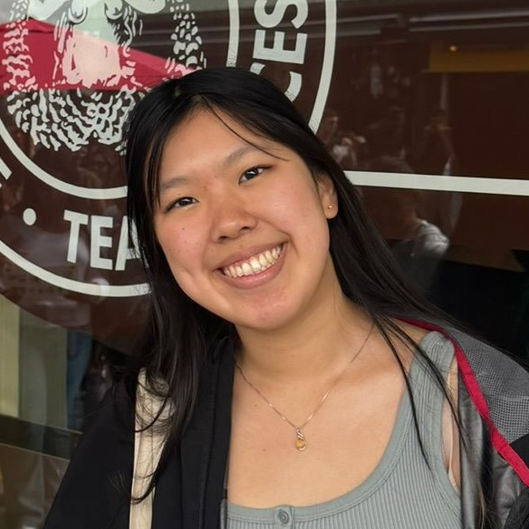
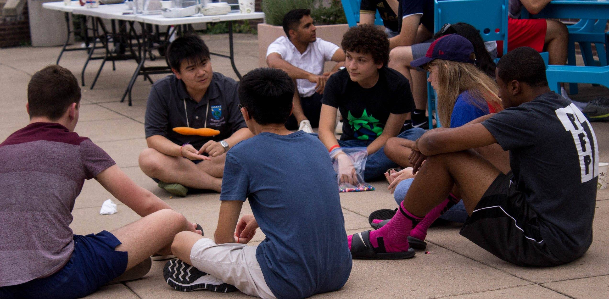
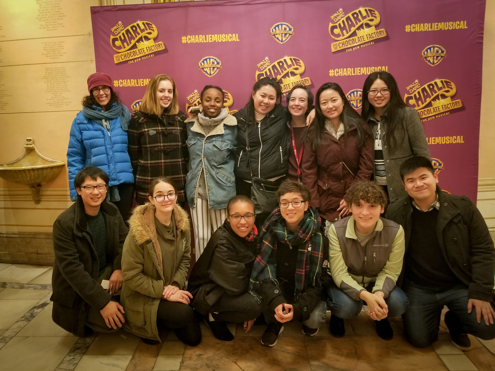
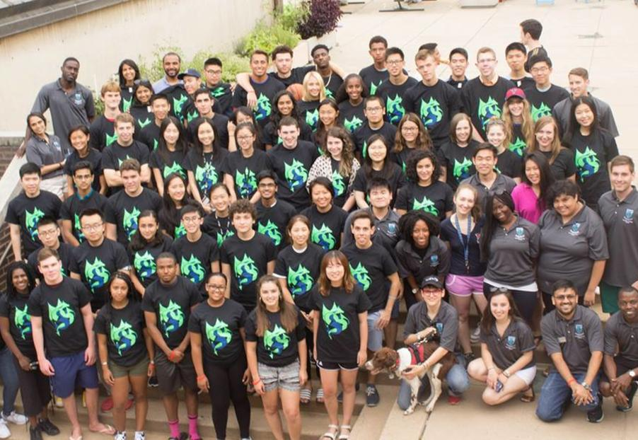
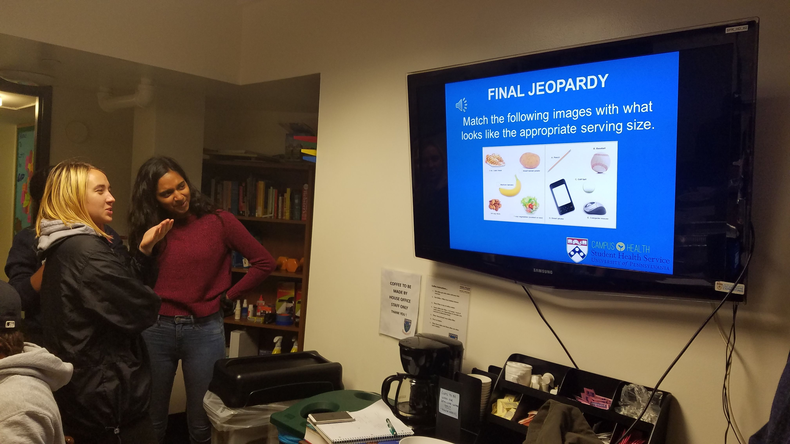
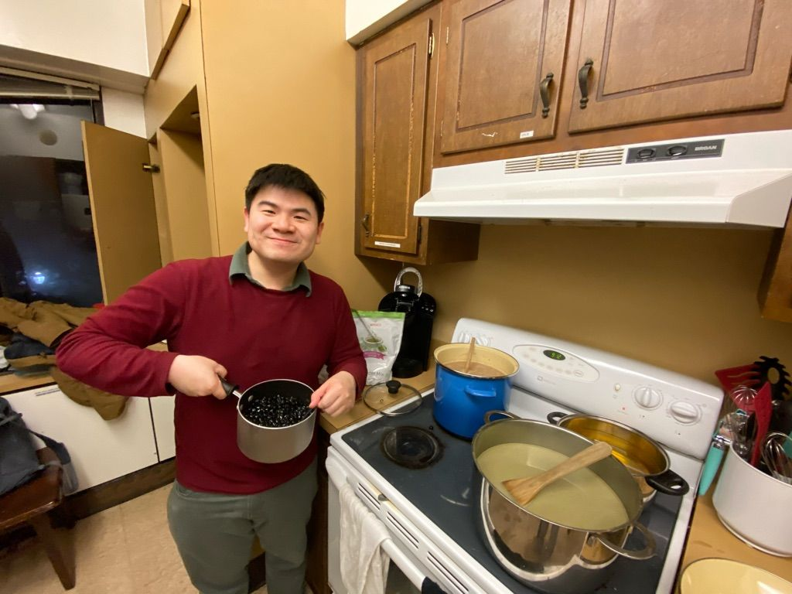
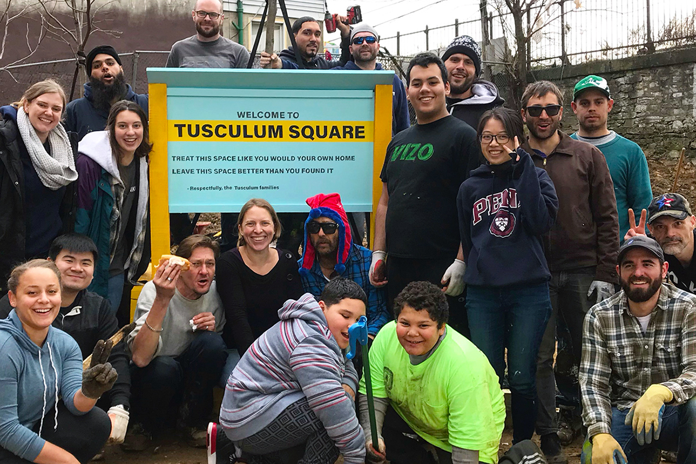
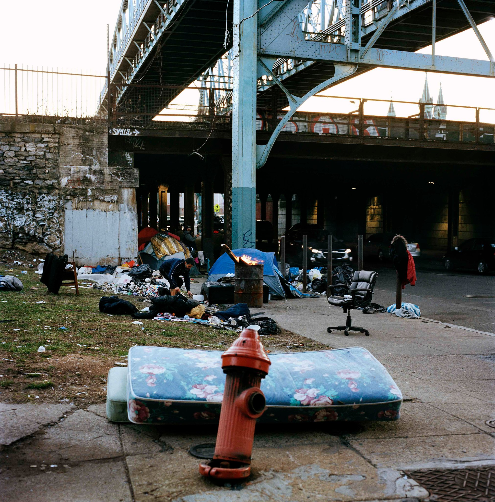
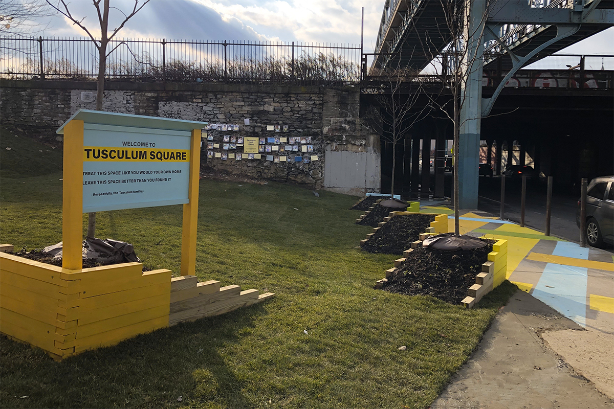
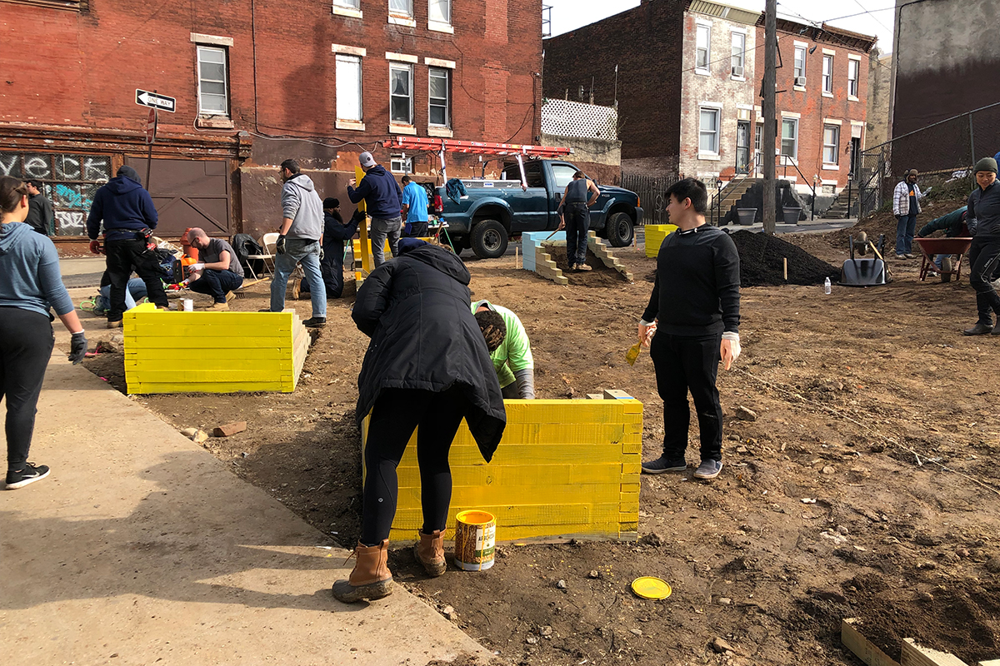

Park Sinchaisri
Wichinpong Sinchaisri
Operations + Analytics Researcher | Future of Work + Human-AI + Cities
I am an Assistant Professor of
Operations and Information Technology Management
at UC Berkeley Haas School of Business.
My official website is here.
I study the design and analysis of data-driven and human-centric solutions to problems in operations management, currently focusing on the future of work ("How do workers decide their flexible schedule?"), human-AI interfaces ("Can ML offer simple tips to help humans?"), dynamic pricing ("How to price when it affects quality perception?"), and urban analytics ("Are more social neighborhoods safer?").
My research group, Berkeley Operations and Behavioral Analytics Lab (BOBALAB), is looking for collaborators; please reach out.
I received my PhD in Operations, Information, and Decisions and AM in Statistics from The Wharton School at the University of Pennsylvania, where I was also a Wharton Social Impact Fellow, my SM in Computational Science and Engineering from MIT, and my ScB in Computer Engineering and Applied Mathematics-Economics from Brown University. I had also worked at Oracle, Goldman Sachs, and Deloitte Consulting. Growing up in Bangkok, I am a world traveller, avid foodie, and design/cities enthusiast.
7/31/25
- Our paper Learning on the Go is accepted for the 28th ACM SIGCHI Conference on Computer-Supported Cooperative Work & Social Computing (CSCW) in Bergen, Norway!
5/22/25
- Our paper Improving Human Sequential Decision Making with Reinforcement Learning is now published in Management Science!
5/10/25
- Our paper Managing Multihoming Workers is selected for presentation at the 2025 Platform Strategy Research Symposium in Boston, MA.
11/13/24
- I will be presenting two of my papers on human-AI interfaces for sequential decision-making at the Tuck School of Business, Dartmouth College.
10/21/24
- Our paper Managing Multihoming Workers won the Second Place for the 2024 INFORMS Technology, Innovation Management and Entrepreneurship Section Best Working Paper Competition.
9/20/24
- Our paper Making ChatGPT Work For Me is accepted for the 28th ACM SIGCHI Conference on Computer-Supported Cooperative Work & Social Computing (CSCW) in Bergen, Norway!
5/18/24
- I am honored to win the Earl F. Cheit Award For Excellence In Teaching for my Operations classes at UC Berkeley Haas!
12/31/23
- I will be presenting two of my papers on human-AI interfaces for sequential decision-making at the Stanford Operations, Information & Technology Seminars on March 6, 2024.
10/7/23
- I will be presenting two of my papers on human-AI interfaces for sequential decision-making at the MIT Initiative on the Digital Economy Seminar on November 15, 2023.
8/30/23
- I am honored and thrilled to present my work at the UC Berkeley–NASA Inaugural Symposium on "The Future of Skills in the AI Era" on September 22, 2023 at NASA’s Ames Research Center!
7/20/23
- I am fortunate to receive the 2023 Fisher Center for Business Analytics Research Grant.
Research Interests
- Behavioral and human-centric operations management, empirical operations management, future of work/gig economy, people analytics, behavioral economics, applied machine learning, human-computer interaction, revenue management and pricing, urban analytics, computational social science
Research Methods
- Econometrics, randomized experiments, reinforcement learning, interpretable machine learning, structural estimation
Publications
Community Vibrancy and its Relationship with Safety in Philadelphia
with Shane JensenPLoS ONE (2021)
Press: Wharton Stories
Wharton Social Impact Initiative Fellowship, 2018-2020
To what extent can the strength of a local urban community impact neighborhood safety? We construct measures of community vibrancy based on a unique dataset of block party permit approvals from the City of Philadelphia. Our first measure captures the overall volume of block party events in a neighborhood whereas our second measure captures differences in the type (regular versus spontaneous) of block party activities. We use both regression modeling and propensity score matching to control for the economic, demographic and land use characteristics of the surrounding neighborhood when examining the relationship between crime and our two measures of community vibrancy. We conduct our analysis on aggregate levels of crime and community vibrancy from 2006 to 2015 as well as the trends in community vibrancy and crime over this time period. We find that neighborhoods with a higher number of block parties have a significantly higher crime rate, while those holding a greater proportion of spontaneous block party events have a significantly lower crime rate. We also find that neighborhoods which have an increase in the proportion of spontaneous block parties over time are significantly more likely to have a decreasing trend in total crime incidence over that same time period.
The Impact of Behavioral and Economic Drivers on Gig Economy Workers
with Gad Allon and Maxime CohenManufacturing & Service Operations Management (2023)
Press: Knowledge@Wharton, Haas Newsroom
Best Paper in Operations and Supply Chain Management, Academy of Management, 2019
Accepted to the 2019 MSOM Service Management SIG
2nd Place, People Analytics Conference Research Paper Competition, 2019
3rd Place, INFORMS Behavioral Operations Management Best Working Paper Award, 2019
Finalist, POMS CBOM Junior Scholar Paper Competition, 2020
Winner, Baker Retailing Center Research Grant, 2018
Gig economy companies benefit from labor flexibility by hiring independent workers in response to real-time demand. However, workers' flexibility in their work schedule poses a great challenge in terms of planning and committing to a service capacity. Understanding what motivates gig economy workers is thus of great importance. In collaboration with a ride-hailing platform, we study how on-demand workers make labor decisions; specifically, when to work and for how long. Our model offers a way to reconcile competing theories of labor supply regarding the impact of financial incentives and behavioral motives on labor decisions. We are interested in both improving how to predict the behavior of gig economy workers and understanding how to design better incentives. Using a large comprehensive dataset, we develop an econometric model to analyze workers' labor decisions and responses to incentives while accounting for sample selection and endogeneity. We find that financial incentives have a significant positive influence on the decision to work and on the work duration-confirming the positive income elasticity posited by the standard income effect. We also find support for a behavioral theory as workers exhibit income-targeting behavior (working less when reaching an income goal) and inertia (working more after working for a longer period). We demonstrate via numerical experiments that incentive optimization based on our insights can increase service capacity by 22% without incurring additional cost, or maintain the same capacity at a 30% lower cost. Ignoring behavioral factors could lead to understaffing by 10-17% below the optimal capacity level. Lastly, inertia could be a potential sign of workers' loyalty to the platform.
Improving Human Sequential Decision Making with Reinforcement Learning
with Hamsa Bastani and Osbert BastaniManagement Science (2025)
Winner, INFORMS Data Mining Best Paper Award, 2022
Winner, WISE Best Conference Paper Award, 2022
Winner, INFORMS Behavioral OM Best Working Paper Award, 2021
2nd Place, INFORMS TIMES Best Working Paper Award, 2021
2nd Place, POMS CBOM Junior Scholar Paper Competition, 2021
Accepted to the 2021 MSOM Service Management SIG
Accepted to the Workshop on Operations of People-Centric Systems at EC'21
Workers spend a significant amount of time learning how to make good decisions. Evaluating the efficacy of a given decision, however, can be complicated --- e.g., decision outcomes are often long-term and relate to the original decision in complex ways. Surprisingly, even though learning good decision-making strategies is difficult, they can often be expressed in simple and concise forms. Focusing on sequential decision-making, we design a novel machine learning algorithm that is capable of extracting "best practices" from trace data and conveying its insights to humans in the form of interpretable "tips". Our algorithm selects the tip that best bridges the gap between the actions taken by the human workers and those taken by the optimal policy in a way that accounts for which actions are consequential for achieving higher performance. We evaluate our approach through a series of randomized controlled user studies where participants manage a virtual kitchen. Our experiments show that the tips generated by our algorithm can significantly improve human performance relative to intuitive baselines. In addition, we discuss a number of empirical insights that can help inform the design of algorithms intended for human-AI interfaces. For instance, we find evidence that participants do not simply blindly follow our tips; instead, they combine them with their own experience to discover additional strategies for improving performance.
Making ChatGPT Work for Me
with Samantha Keppler and Clare Snyder
Proceedings of the ACM on Human-Computer Interaction (2025)
Press: The Conversation, The 74 Million
Increasingly, work happens through human collaboration with generative AI (e.g., ChatGPT). In this paper, we conduct a qualitative study of this collaboration for real-life work tasks. We focus our study on full-view public school teachers (N = 24) who must regularly complete text-generation tasks including creating quizzes, slide decks, word problems, reading passages, lesson plans, classroom activities, and/or projects. In one-on-one video- and audio-recorded virtual sessions, we observe each teacher use ChatGPT-4 for work tasks of their choosing for 15 minutes, and debrief their experience. Analyzing 201 prompts inputted by the 24 teachers, we uncover four main modes in which the teachers request support from ChatGPT: (1) make for me (55% of prompts), (2) find for me (15%), (3) jump-start for me (10.5%), and (4) iterate with me (15.5%). When we analyze the data at the conversation level, where a conversation is one or more prompts about the same topic, we find 66 out of the 80 teacher-ChatGPT conversations in our data employ only one support mode. In only 14 conversations did teachers combine different modes of support. A follow-up survey of the same 24 teachers reinforces our evidence of the prompt- and conversation-level variety in ChatGPT use "in the wild." Our findings contribute to an emerging theory of generative AI use in practice.
Learning on the Go: Understanding How Gig Economy Workers Learn with Recommendation Algorithms
with Shunan Jiang
Proceedings of the ACM on Human-Computer Interaction (2025)
As gig economy platforms increasingly rely on algorithms to manage workers, understanding how algorithmic recommendations influence worker behavior is critical for optimizing platform design and improving worker welfare. In this paper, we investigate the dynamic interactions between gig workers and platform algorithms, with a particular focus on how workers learn to improve their strategy and performance over time. Using multiple quantitative methods, including two-way fixed-effects regression and multinomial logit modeling, we analyze over one million orders completed by gig workers on a retail delivery platform. Our findings reveal a clear learning curve: workers progressively improving their efficiency and on-time delivery performance with increased experience. We also find that while newcomers heavily rely on algorithmic recommendations for task selection, more experienced workers tend to deviate from these recommendations, developing and employing personalized strategies. This shift suggests that experienced workers may perceive algorithmic recommendations as less beneficial or misaligned with their evolved preferences, highlighting the necessity for adaptive recommendation systems. Our research underscores the importance of designing human-centric recommendation algorithms that accommodate workers' learning trajectories, incorporate their feedback, and offer flexibility to support personalized strategies, ultimately enhancing collaborative dynamics and outcomes for both workers and platforms.
Working Papers
Markdown Pricing with Quality Perception
with Rim Hariss, Georgia Perakis, and Y. Karen ZhengMajor Revision (2nd Round) at Manufacturing & Service Operations Management
Honorable Mention, MIT ORC Best Student Paper Award, 2017
Consumers often perceive higher-priced products to have higher quality. Less is known on how quality perception is affected by price markdowns. In addition, it is an open question whether and how consumers' ex-ante expectation on a future markdown affects their quality perception as well as purchase decisions. We answer these questions in a markdown setting under a fixed inventory. This paper adds to the growing literature that incorporates consumers' behavioral regularities in revenue management by studying the new dimension of quality perception and generates new insights absent in the current literature. Our results offer insights on how retailers should adapt their markdown strategy in the presence of price-based quality perception. We develop a consumer model that incorporates quality perception and emotional loss when the expected markdown is too optimistic as compared to the actual markdown. We embed this model into the retailer's markdown optimization and examine the impact of consumers' behavioral factors on the retailer's optimal strategy. Finally, we design and conduct a consumer study to calibrate our model and validate the functional relationships among key factors. Consumers' quality perception increases with the products full price while it decreases with the (expected) markdown. We show that the retailer's optimal markdown is nonmonotone in these quality perception parameters. The nonmonotonicity is driven by the nontrivial tradeoff of trying to maintain a higher perceived quality by the consumers while controlling potential loss emotion that could arise if consumers observe a smaller-than-expected markdown, particularly when total market demand is not very large. Furthermore, we find that it is beneficial for the retailer to pre-announce and commit to a markdown strategy to prevent a mismatch between consumers' expectation and the actual markdown. This approach benefits the retailer by eliminating the negative effect on sales of the consumers' loss emotion due to an optimistic expectation. Ignoring these behavioral factors can substantially hurt the retailer's payoff. When inventory is tight, it is critical to correctly capture consumers quality perception (38% average loss in payoff if ignored). When instead inventory is sufficient, the retailer should be mindful of the potential emotional loss that its markdown could create among its consumers.
Managing Multihoming Workers in the Gig Economy
with Gad Allon, Maxime Cohen, and Ken Moon
Submitted
2nd Place, INFORMS TIMES Best Working Paper Award, 2024
Accepted to the 2023 MSOM Service Management SIG
Spotlight Presentation at the 2022 INFORMS RMP Conference
Mack Institute Research Fellowship, 2020
Fishman Davidson Center Research Grant, 2019
Russell Ackoff Fellowship, 2019
abstract PDF [February 2026] SSRN [February 2026]
Gig economy platforms increasingly compete to source labor from common pools of multihoming workers, who dynamically allocate their services between competing platforms. Therefore, the question of how platforms can design pay and other levers to attract labor has gained significance. However, standard gig economy data are often incomplete from a choice modeling perspective, which impedes platforms' understanding of workers' multihoming preferences and choices. We study this problem using data shared by a major ride-hailing platform integrated with public data revealing the drivers' outside options in NYC. We structurally estimate a dynamic work-or-switch model using a novel combination of simulation and adversarial machine learning to overcome the empirical problem of contextually incomplete choice data. We find drivers to be significantly focused on short-horizon intraday payoffs while displaying significant heterogeneity in their costs of working. We offer prescriptions for platforms based on counterfactual analyses. We find that at a fixed labor cost, offering dynamic but guaranteed hourly pay rates can increase labor capacity over paying workers on a per-trip basis. A substantial segment of drivers are rarely observed to use pay-per-work platforms and would demand substantially increased compensation to accept that mode of pay. Next, we conduct a counterfactual policy exercise based on New York City's Driver Income Rules; this out-of-sample exercise validates recent empirical studies showing that higher posted pay worsens congestion while achieving muted gains in realized earnings. As alternative levers, platforms can reduce multihoming via offering streak bonuses, but impeding quits induces drivers to switch earlier to other platforms. Overall, managing multihoming requires aligning pay timing with workers' decision horizons, and instituting wage floors requires complementary measures to manage increased congestion.
Precise or Broad? Designing Algorithmic Advice for Learning in Sequential Decision Making
with Philippe Blaettchen
Accepted to the 2025 CHI Workshop on Human-AI Interaction for Augmented Reasoning
Accepted to the 2025 EC Workshop on Human-AI Collaboration
Berkeley AI Research Commons Grant, 2021
Center for Growth Markets Research Grant, 2022
Organizations increasingly deploy algorithmic tools to support complex operational decisions, raising a practical design question: how should these tools be built when designers care not only about immediate performance, but also about preserving and building human skill that remains valuable when advice is unavailable, imperfect, or requires genuine oversight? We study how the \emph{precision} of algorithmic advice shapes this trade-off. We develop a stylized model of advice-taking and learning. The model characterizes a reward-learning frontier: precise, action-level advice is easier to implement and improves payoffs while available through higher compliance, whereas broad, strategic advice requires interpretation, induces greater exploration, and generates knowledge that is portable, even when decision environments differ. We test the model's predictions in two online experiments in an electric-vehicle routing and charging task, representing typical characteristics of sequential decision tasks. Consistent with the theory, precise numerical advice delivers the strongest gains during the advice phase, whereas broader advice can yield more robust performance after advice is removed, specifically if the new environment differs substantially, but not completely. We use inverse reinforcement learning to recover interpretable latent objective components from action traces, distinguishing transient compliance from persistent internalization. Our results provide design guidance for advice systems that balance short-run operational efficiency with the development of long-run human capability. They also help validate inverse reinforcement learning as an effective tool for estimating human behaviors in complex sequential tasks.
The Teacher's Knapsack: Generative AI and Teacher Productivity
with Samantha Keppler and Clare Snyder
Problem definition: Generative AI are multipurpose tools, meaning they can be used for a variety of different types of tasks. A primary reason generative AI may have a particularly large impact on teacher productivity is because teacher work involves a large variety of tasks (i.e., activities, quizzes, projects, presentations). Yet, teacher work is also characterized by high amount of task discretion. Teachers often choose which task they do, such as between creating a worksheet or doing a hands on activity to teach a concept. How does generative AI impact the productivity of teachers who both plan and do their work? Methodology/results: We conduct a study that integrates a theoretical model of teacher task selection---a time-minimizing knapsack---with qualitative evidence about teacher use of generative AI. Specifically, we conducted in-depth interviews (29), observations (360 minutes of recordings of teachers using ChatGPT for their work), and surveys (34) at multiple points in time from 24 full-view K12 teachers varying in grade level and subject taught. We find that teachers use generative AI at the task level, as support for completing their to-do list, but also in some cases at the planning level, as support for coming up with their to-do list. Within a knapsack framework, planning-level generative AI use helps teachers ``re-optimize" their set of selected tasks given the impact of generative AI on task speed and quality. However at the task level, teachers simply use generative AI for their original set of tasks, leaving potential productivity gains unrealized. The productivity gap between planning-level and task-level generative AI use could be quite large, particularly when AI makes some tasks much faster or much higher quality---or much slower or worse--- than they were before generative AI. Managerial implications: Our study resolves an ongoing debate as to whether generative AI is helpful for teacher ``lesson planning." Productivity gains are not fully realized when teachers simply use generative AI on tasks they have done in the past. For teacher work, productivity gains from generative AI will be driven more by the substitution of tasks rather than the acceleration of existing ones.
Strategic Advice in the Age of Personal AI
with Yueyang Liu
Personal AI assistants have changed how people use institutional and professional advice. We study this new strategic setting in which individuals may stochastically consult a personal AI whose recommendation is predictable to the focal advisor. Personal AI enters this strategic environment along two dimensions: how often it is consulted and how much weight it receives in the human's decision when consulted. Anticipating this, the advisor responds by counteracting the personal AI recommendation. Counteraction becomes more aggressive as personal AI is consulted more often. Yet advisor performance is non-monotone: equilibrium loss is highest at intermediate levels of adoption and vanishes when personal AI is never used or always used. Trust affects performance through a single relative influence index, and greater relative influence of personal AI increases advisor vulnerability. Extending the framework to costly credibility building, we characterize how personal AI adoption reshapes incentives to invest in trust.
Learning to Gig: Two-Phase Bandits with Arm Agency and Learning
with Haonan Deng, Shunan Jiang, Xinpeng Qu
Gig platforms increasingly use algorithmic recommendations to steer workers toward tasks, but recommendations are only effective when workers both accept the suggested tasks and can execute them well. This paper studies how a platform should recommend a batch of tasks when workers are heterogeneous, improve with experience, and accept tasks strategically. We develop a stylized model in which each worker's latent service quality follows a learning curve and task acceptance follows a logit response to expected performance. The platform's per-round objective trades off the expected quality of the executed task against the risk of market failure when no worker accepts. We first show that the platform's expected reward is monotone submodular, which motivates a scalable greedy oracle benchmark. We then propose C-UCB-LR, a learning-aware combinatorial UCB policy that exploits submodularity while learning worker-specific quality parameters from noisy service outcomes, and we derive a learning-theoretic sublinear regret bound. To address operational reliability, we also introduce a safe variant that enforces a user-specified lower bound on the probability of at least one acceptance. Finally, we calibrate the model using large-scale operational data from a U.S. retail delivery platform and run counterfactual simulations. The calibrated environment highlights sizable gains from learning-aware recommendations relative to baselines that ignore worker learning or acceptance behavior.
Understanding Non-Adoption of "Optimal" Algorithmic Advice for Problem Solving
with David Lee
Accepted to CHI'22 Workshop on Trust and Reliance in AI-Human Teams
Prior research on human-AI systems has focused on simple adopt/reject decisions on AI-generated tips, leaving sequential decision-making contexts less explored. In sequential tasks, tips suggest best practices that humans must operationalize across multiple decisions towards a problem-solving objective. In this paper, we explore human non-adoption of such tips in a virtual kitchen management task where disruptions necessitate a change of strategy. A qualitative analysis reveals diverse views of tips: as rules, directional principles, experimental options, or initially ignorable advice. Tips can still benefit those who reject them through creating focal points influencing worker sense-making. The challenge of operationalizing tips can lead to diverse barriers not just related to trust, but also to tip usability and environmental factors. A follow-up quantitative study confirmed three prominent barriers impacting participant intent to use tips. It also found that problem solving style, specifically an "Orientation to Change", may influence one's experience of barriers and tip adoption.
Work in Progress
Managing Competitive Multi-agent Environments with Recommendation Algorithms
with Bryce McLaughlinDesigning and Sequencing Incentives for Platform Workers
(solo-authored)Learning Across Jobs
with Ryan JesubalanExperimentation without Experiments
with Xinwei Chen, Xiexin Liu, Yixiang XuBerkeley Operations & Behavioral Analytics (BOBALAB)
We are currently looking for undergraduate/graduate research assistants as well as academic/industry collaborators for several projects on human-AI interfaces for operations managemen and the future of work through Berkeley's URAP program or bobalab [at] berkeley.edu
Current Students (2026)




Selected Alumni
Berkeley: Lawrence Chen '25, Chelsea Kawamura '25 (University of Edinburgh), Brandon Chin '25, Shunan Jiang PhD'25 (Google Research), Edward Lee '25, Yutong Wu '25 (Computer & Information Science MS at Penn), Thomas Yeoh '25 (Computer Science MS at UC Irvine), Austin Zhu '25 (Economics PhD at Michigan), Kristin Chen '24 (Master in Finance at UChicago), Serena Gu '24 (Computer & Information Science MS at Penn), Matthew Lee '24 (Computer Science MS at Stanford), Ron Wang (Computer Science MS at Stanford), Jerry Zhu (Machine Learning & Data Science MS at Northwestern), Jacky Kwok '23 (Computer Science PhD at Stanford), Laura Li '23 (Master in Business Analytics at MIT), Nicole Liu '23 (Master in Public Health at Berkeley), Mingyuan (Jeremy) Ma '23 (Data Science MS at Harvard), Nick Melamed '23 (Data Science MS at Berkeley), Ethan Wang '23 (Data Science MS at Berkeley), Kareena Wu '23 (McKinsey), Stephen Yang '23 (Computational Science & Engineering MS at Harvard)
Others Na Hyun Kim '24(Operations, Information & Decisions PhD at Wharton), Lorry Wu '23 (Technology & Operations Management PhD at Harvard), Stephen Lin '22 (Behavioral & Decision Sciences MS at Penn), Canary Zhu ’21 (Information Systems & Management PhD at CMU)
Other Works
Student Mentorship and Student Mental Health/Suicide Prevention
Since Fall 2024, I have been serving as a Resident Faculty at UC Berkeley. My signature event series is called How It's Possible with Park, where I take students to see behind-the-scene operations at various organizations, from a chocolate factory to a tofu factory to a musical production.





Social Impact in Practice/Urban Planning
As a city planning enthusiast, I always seek opportunities to make a positive social impact to the local community. Beyond my urban analytics research with the Wharton Social Impact Initiative, I have been working with PennPraxis to meaningfully engage with community partners and practitioners in Philadelphia and implement community development projects. In Fall 2018, we transformed a vacant lot on the border between a residential area and a homeless encampment in Kensington ("Walmart of Heroin") into a beautiful green space ("Tusculum Square"). The lot, once filled with litter and home to illegal dumping, now stands as a welcoming space for residents and visitors. I co-wrote an article about this transformation for a city planning magazine (joint work with Alex Baum and Mariela Hernandez).




People Analytics
I enjoy analyzing data on human behavior to uncover new insights (and inspire my research). One area of interest is to identify biases and discriminatory behaviors from data. In 2018, I looked into the review process for the Global Health Corps (GHC) fellowship and identified biases and disagreements among reviewers (joint work with Titipat Achakulvisut). Our work won the Second Prize at the People Analytics Conference Case Competition.